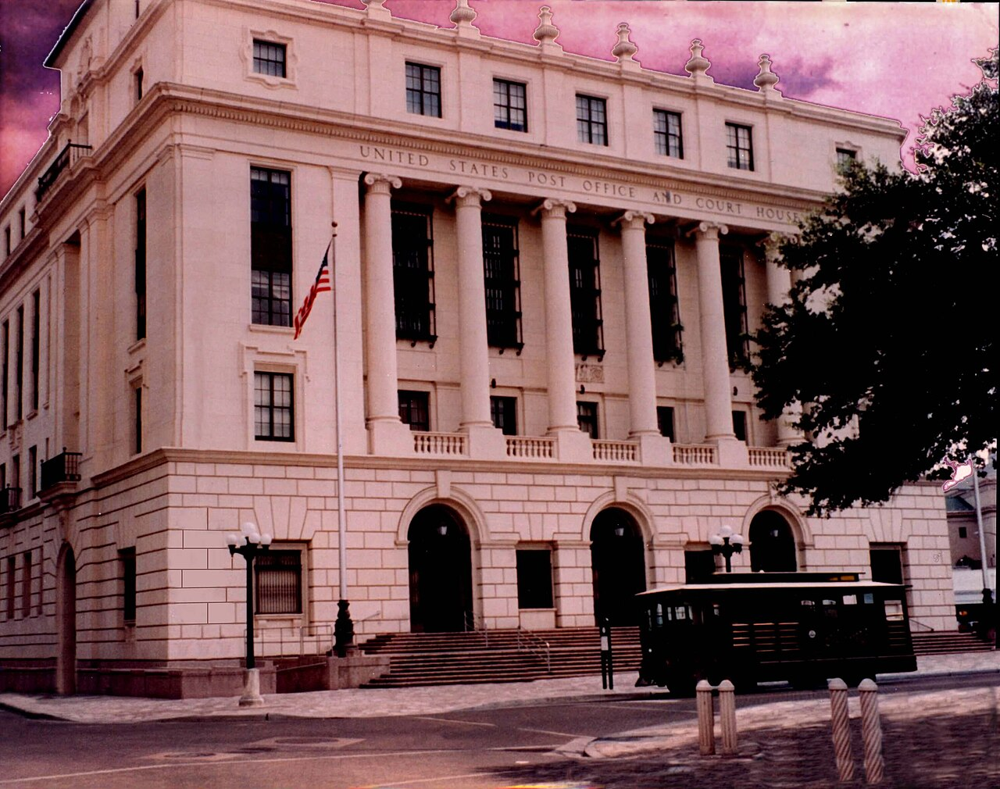

Как работают убежище (asylum) и иммиграционный суд в США
Убежище (asylum) — форма защиты для людей, опасающихся преследования и уже находящихся в США или на их границе. В этом справочнике на основе только официальных источников объясняются правовая база убежища, кто может подавать заявление, годичный срок и форма I-589, два пути (affirmative через USCIS и defensive в иммиграционном суде), структура EOIR и BIA, разрешение на работу, а также путь к грин-карте и гражданству. Это общая информация, а не юридическая консультация.

Убежище (по-английски asylum) — форма защиты, которая может быть предоставлена людям, находящимся в США или на их границе и имеющим обоснованный страх преследования в случае возвращения на родину. Его правовая основа — статья 208 Закона об иммиграции и гражданстве (INA) (8 U.S.C. §1158). Этот справочник объясняет общий порядок строго на основе официальных источников — Службы гражданства и иммиграции США (USCIS), Управления по рассмотрению иммиграционных дел (EOIR) Министерства юстиции и авторитетных правовых организаций. Это не юридическая консультация; каждое дело уникально, а закон и практика время от времени меняются.
Что такое убежище и кто может подавать заявление
Чтобы получить убежище, заявитель должен доказать, что он подвергался преследованию или имеет обоснованный страх преследования на родине по одному из пяти оснований — раса, религия, национальность, принадлежность к определённой социальной группе или политические взгляды. Убежище отличается от статуса беженца: статус беженца запрашивается из-за рубежа, а убежище — когда человек находится на территории США или на их границе. После предоставления убежища человек получает статус «asylee».
Годичный срок и форма I-589
Как правило, заявление об убежище — форма I-589 (Application for Asylum and for Withholding of Removal) — должно быть подано в течение одного года после прибытия в США. Из этого срока возможны исключения при изменившихся или чрезвычайных обстоятельствах. За подачу формы I-589 государственная пошлина не взимается. Заявитель может включить в заявление супруга и не состоящих в браке детей до 21 года, находящихся в США, как производных (derivative) лиц.

Два пути: affirmative и defensive
Убежище запрашивается двумя способами. Первый — affirmative (аффирмативный) процесс: человек, против которого не возбуждено дело о высылке, подаёт форму I-589 в офис убежища USCIS и проходит собеседование с офицером по убежищу. Второй — defensive (защитный) процесс: человек, против которого уже возбуждено дело о высылке (removal), запрашивает убежище в качестве защиты перед иммиграционным судьёй. Задержанных на границе или в порядке ускоренной высылки сначала проводят через собеседование на «обоснованный страх» (credible fear); при положительном результате дело передаётся в иммиграционный суд.
Иммиграционный суд (EOIR) и апелляция
Иммиграционные суды США не являются частью независимой судебной власти, а подчиняются EOIR (Управлению по рассмотрению иммиграционных дел) в составе Министерства юстиции; дело рассматривает иммиграционный судья. Решение судьи можно обжаловать в Совете по иммиграционным апелляциям (BIA); после этого дело может перейти в федеральные апелляционные суды (circuit courts). По данным TRAC (Сиракьюзский университет), число нерассмотренных дел в иммиграционных судах в последние годы превысило 3 миллиона, из-за чего дела ожидают годами.
Разрешение на работу (EAD)
Заявителю об убежище не разрешается работать сразу. Как правило, он может подать на разрешение на работу (Employment Authorization Document, EAD) после того, как его заявление находится на рассмотрении 150 дней, а само разрешение выдаётся после того, как заявление ожидает не менее 180 дней. После предоставления убежища asylee имеет право работать без какого-либо дополнительного разрешения.
После убежища: грин-карта и гражданство
Человек, которому предоставлено убежище, получает право подать на постоянное жительство — грин-карту (форма I-485) — через год. После получения грин-карты человек, как правило, может подать на гражданство США через натурализацию спустя пять лет. Супруг и дети, включённые в заявление asylee, также могут воспользоваться соответствующим статусом и путём.
Чем это отличается от других видов защиты
Убежище отличается от приостановления высылки (withholding of removal) и защиты по Конвенции против пыток (CAT): эти два вида защиты обычно требуют более высокого стандарта доказывания и не ведут напрямую к грин-карте, но останавливают возвращение человека в конкретную страну. Статус беженца (refugee), напротив, запрашивается за рубежом, до прибытия человека в США.
Примечание
Этот текст — общая информация и не заменяет юридическую консультацию. Законы и сроки по убежищу меняются, и каждое дело уникально. За официальной консультацией рекомендуется обращаться к лицензированному иммиграционному адвокату или к представителю, аккредитованному Министерством юстиции (BIA-accredited representative). Остерегайтесь «нотарио» или нелицензированных консультантов — они не адвокаты.

Источники
- USCIS — Asylum (boshpana ta'rifi, I-589, affirmativ jarayon, grin-karta yo'li)
- USCIS — Obtaining Asylum in the United States (affirmativ va himoyaviy yo'llar)
- DOJ EOIR — Executive Office for Immigration Review (immigratsiya sudlari, BIA)
- American Immigration Council — Asylum in the United States (muddat, EAD, jarayon)
- TRAC Immigration, Syracuse University — Immigration Court backlog